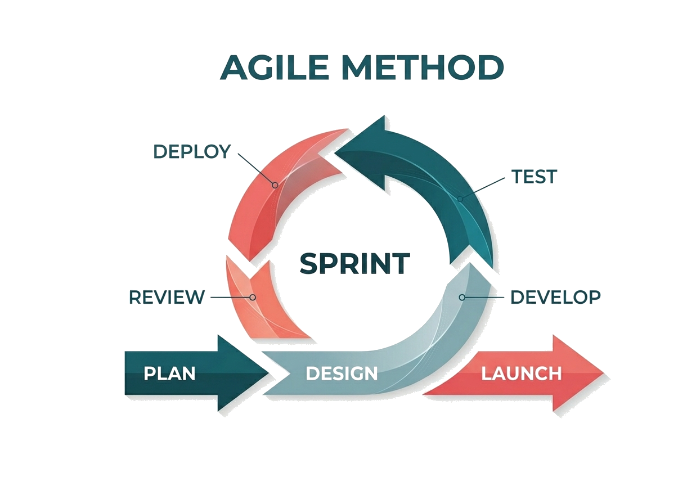

Proven methodology — from diagnosis to value
A proven 4-step methodology, from initial diagnosis to measured return on investment
Mapping your data, identifying gaps and opportunities for improvement
Before transforming your data, you must first understand it. Our audit offers a clear and objective vision of your current situation: where your data is, how it flows, and above all, what concrete opportunities are available to you.
We start by capturing your data reality: sources, flows, volumes. No jargon, just a clear map of your landscape.
We pinpoint friction points: duplicates, obsolete data, GDPR risks. Every identified gap is a measurable opportunity.
No more shelf-ware reports. A concrete plan with quick wins, prioritized 12-month roadmap, and realistic budget.
Designing the MDM repository tailored to your challenges and technical environment
An effective MDM repository doesn't come off-the-shelf. It must align with your business processes, integrate with your existing infrastructure, and grow with you. Our approach: design an architecture that meets today's challenges without locking you into tomorrow's constraints.
We define the scope (customers, products...) and choose the relevant stack (Informatica, custom, cloud native) based on your constraints.
Designing links with your ERP/CRM. We decide between real-time or batch flows and integrate security from day one.
We deliver clear, actionable diagrams for your devs. An MDM designed to evolve without needing a complete overhaul every 3 years.
Agile deployment in sprints, integration with your systems, and continuous testing
No more 18-month development black holes. We work in agile mode: short sprints, concrete deliverables every 2-3 weeks, and your validation at each stage. You drive the progress, we manage the technical complexity.
Each iteration delivers a functional block you can test immediately. We pivot at the next sprint if your priorities change.
We automate and secure flows to your current tools. Migration is gradual, without impacting your live production environment.
A bug detected in sprint 3 is fixed in 48h. We validate everything with key users before global deployment.
Quality KPIs, ROI reporting, continuous improvement, and skill development
Implementation is just the start. We don't just deliver a tool: we measure the real impact on your business. Every euro invested in your MDM must pay off.
No more flying blind. Our indicators prove the project's daily value to your business units.
Skill transfer is in our DNA. We train your teams for total operational autonomy.
We co-calculate real gains (time, budget, productivity). Our success is your financial achievement.
Defining objectives and prioritizing tasks for the next cycle.
Custom technical architecture and functional design of the solution.
Environment initialization and preparation of data flows.
Iterative construction of features and specialized connectors.

Continuous validation of quality, security, and business compliance.
Secure production release of the validated software block.
Result analysis and immediate integration of user feedback.
Short 2–3 week cycle delivering concrete, measurable value.
Business use case oriented approach
Modular and scalable architecture
Systematic data quality measurement
Native cloud & on-premise integration
Transparent and documented governance
Agile delivery via value sprints